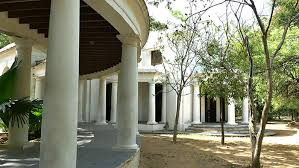
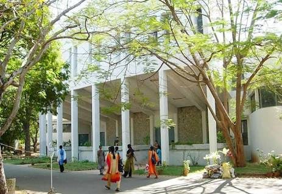
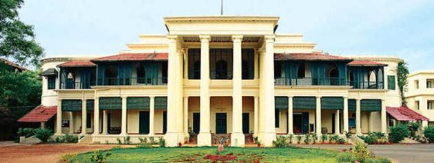
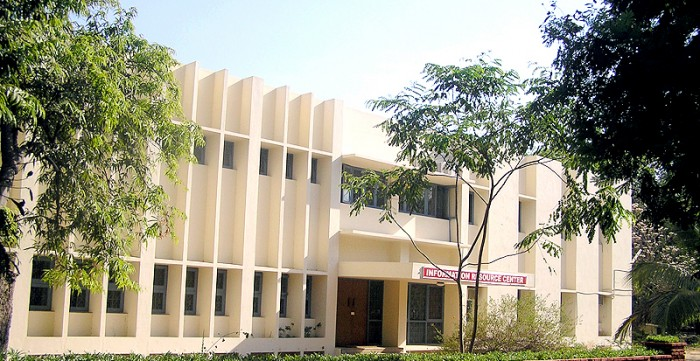
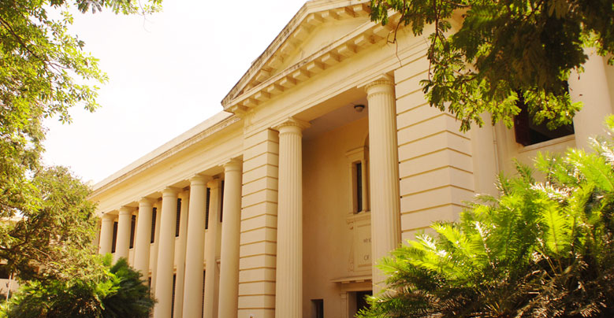
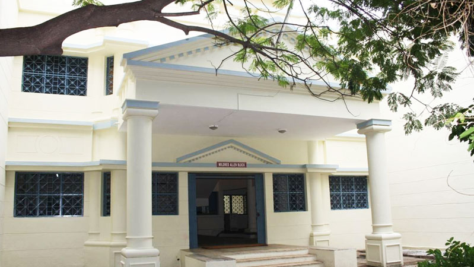
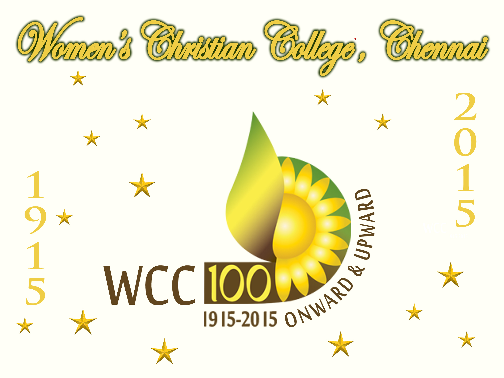
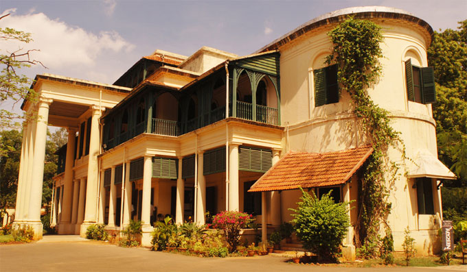

Welcome to Department of Computer Science and Technology,
Email-id:cst@wcc.edu.in
The department was established in 1999 with one UG programme.In 2001,a 5-year integrated Master's
programme in Computer Science and Technology and a Master's programme in Information Technology were
started. Considering the fact that India is thrusting itself as the leader into the information technology era,
the department aims to impact high quality education and
prepare the young women to challenge the ever
demanding IT field. The curriculum of the courses are designed to give strong foundation in all technical
aspects of computers and its applications and also to develop the communication and soft skills of the
students. Apart from making them good IT professionals,the department takes care to instil strong moral
values into each individual to make them good citizens of our nation to serve the industry and society. The
self-financing section of the college was granted autonomous status in the year 2005.Since then the
department has made a conscious effort to strengthen and expand its activities.
OBJECTIVES:
1.To translate the mission statement of WCC.
2.To ignite the inner potential of the students and cultivate creativity and initiative among the students
through academic and co-curricular activities.
3.To give hands on experience in the IT industry through projects.
STUDENT STRENGTH:
The department of Computer Science(Self-financed) has a total of 332 students.
150 in B.C.A,130 in C.S.T and 52 in I.T programs.
PROGRAMS OFFERED:
The department of Computer Science(Self-financed) offers the following Programmes:
1.Bachelor of Computer Applications
2.M.Sc Computer Science and Technology(5 Years Integrated Course)
3.M.Sc Information Technology